点击Probes config,如选择抓取AbilityMonitor
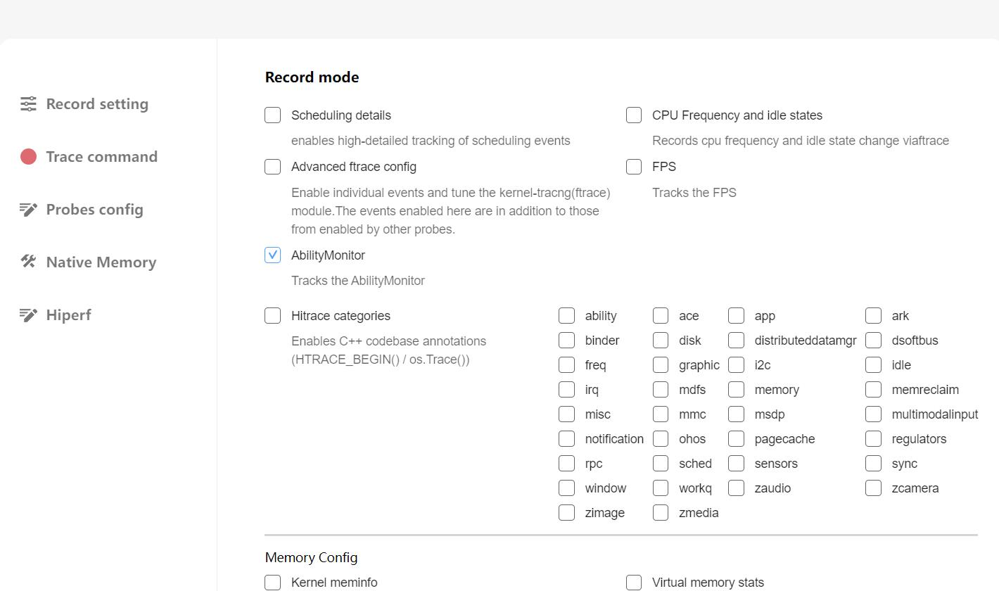
点击Record setting,在output file path输入文件名hiprofiler_data_abilitymonitor.htrace,拖动滚动条设置buffer size大小是64M,抓取时长是50s
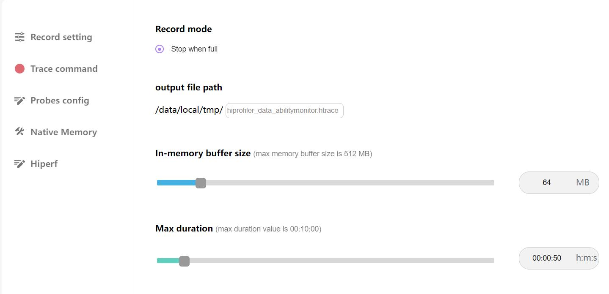
点击Trace command,就会根据上面的配置生成抓取命令,点击复制按钮，会将命令行复制
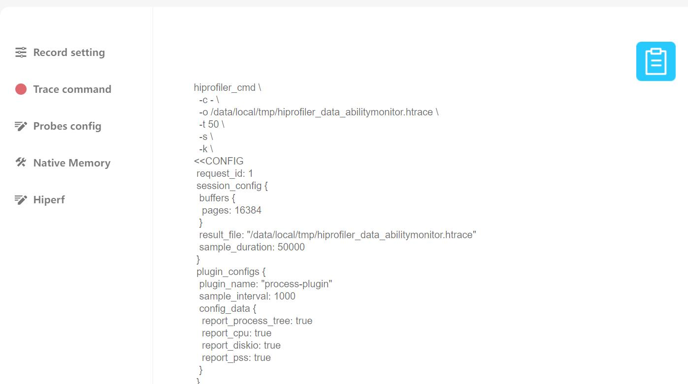
输入hdc_shell,进入设备,执行命令
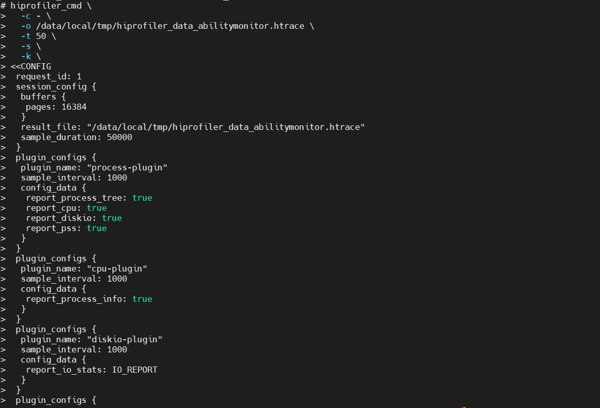
进入指定目录,cd /data/local/tmp 进入到目录，会看到生成的trace文件
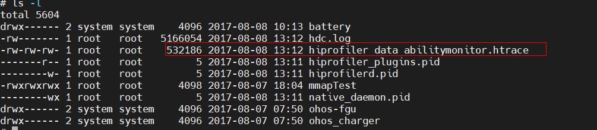
将抓取的文件导入到smartperf工具查看，能了解CPU,内存,磁盘IO和网络的使用情况
Ability Monitor展开就可以看到泳道图，包括CPU,内存,磁盘IO,网络的使用情况
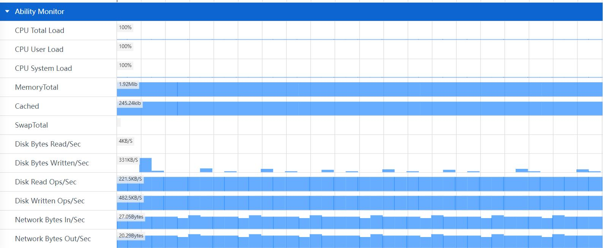
CPU Total Load: 总的CPU使用率
CPU User Load: CPU在用户态空间运行的使用率
CPU System Load：CPU在内核空间运行的使用率
MemoryTotal: 总计物理内存的大小
Cached：缓存的大小
SwapTotal: 虚拟内存
Disk Bytes Read/Sec：每秒从磁盘读取到内存的字节数。
Disk Bytes Written/Sec: 每秒从内存写入磁盘的字节数。
Disk Read Ops/Sec：读入的字节数
Disk Written Ops/Sec: 写入的字节数
Network Bytes In/Sec：每秒接收的网络数据字节数
Network Bytes Out/Sec: 每秒发送的网络数据字节数
Network Packets In/Sec：每秒接收的网络数据包数
Network Packets Out/Sec: 每秒发送的网络数据包数
可以对CPU,内存,磁盘IO和网络的数据进行框选，框选后在最下方的弹出层中会展示框选数据的统计表格,总共有六个tab页
Live Processes的Tab页
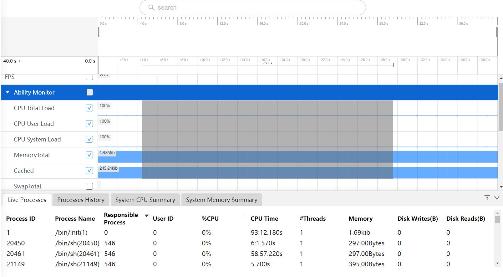
Process ID:进程的ID
Process Name:进程名称
Responsible Process:父进程ID
User ID:用户ID
%CPU:进程的CPU占用率
CPU Time:CPU运行时间
#Threads:进程的线程数量
Memory:内存值
Disk Writes(B):磁盘读入的字节数
Disk Reads(B):磁盘写入的字节数
Processes History的Tab页
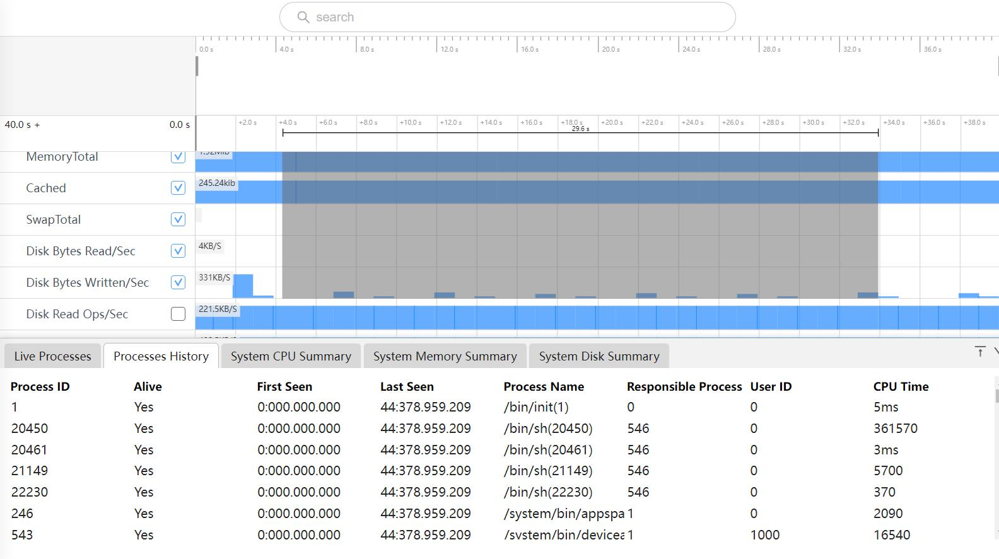
Process ID:进程ID
Alive:进程是否存活
First Seen:开始时间
Last Seen:所选区域的结束时间
Process Name:进程名称
Responsible Process:父进程ID
User ID:用户ID
CPU Time:CPU运行时间
框选CPU Total Load,CPU User Load,CPU System Load三个区域的泳道图,会展示System CPU Summary的Tab页
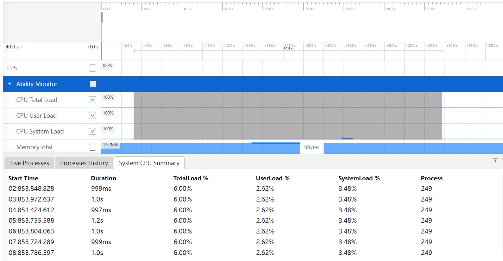
Start Time:采集时间的时间戳
Duration:前一次采集到本次采集的时间差
TotalLoad%:总的CPU使用率
UserLoad%:CPU在用户态空间运行的使用率
SystemLoad%:CPU在内核空间运行的使用率
Process:进程号
框选MemoryTotal,Cached,SwapTota三个区域的泳道图,会展示System Memory Summary的Tab页
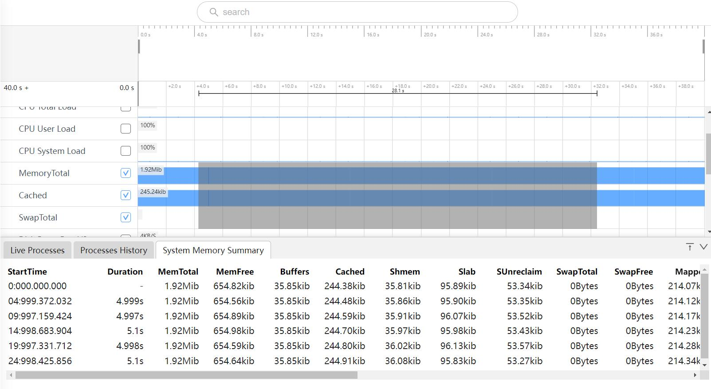
Start Time:采集时间的时间戳
Duration:前一次采集到本次采集的时间差
MemTotal:总内存大小
MemFree:空闲内存大小
Buffers:文件的缓冲大小
Cached:缓存的大小
Shmem:已被分配的共享内存大小
Slab:内核数据缓存大小
SUnreclaim:不可回收的Slab大小
Swap Toal:交换空间的总大小
SwapFree:未被使用交换空间的大小
Mapped:设备和文件等映射的大小
VmallocUsed:已被使用的虚拟内存大小
PageTables:管理内存分页的索引表大小
KernelStack:Kernel消耗的内存
Active: 在活跃使用中的缓冲或高速缓冲存储器页面文件的大小
Inactive:在不经常使用中的缓冲或高速缓冲存储器页面文件的大小
Unevictable:不能被释放的内存页
VmallocTotal:可以vmalloc虚拟内存大小
CmaTotal:总的连续可用内存
CmaFree:空闲的可用内存
框选Disk Bytes Read/Sec,Disk Bytes Written/Sec,Disk Read Ops/Sec, Disk Written
Ops/Sec四个区域的泳道图,会展示System Disk Summary的Tab页
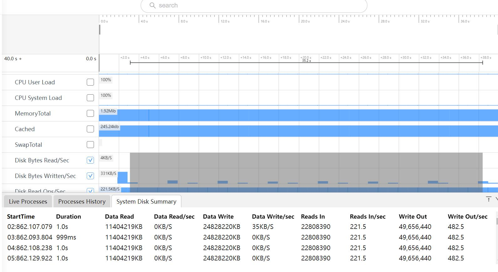
Start Time:采集时间的时间戳
Duration:前一次采集到本次采集的时间差
Data Read:从磁盘读取到内存的总字节数
Data Read/sec:每秒从磁盘读取到内存的字节数
Data Write:从磁盘写入磁盘的总字节数。
Data Write/sec:每秒从内存写入磁盘的字节数。
Reads In:读入的字节数
Reads In/sec:每秒读入的字节数;
Write Out:写入的字节数
Write Out/sec:每秒写入的字节数
框选Network Bytes In/Sec,Network Bytes Out/Sec,Network Packets In/Sec,Network Packets
Out/Sec四个区域的泳道图,会展示System Network Summary的Tab页
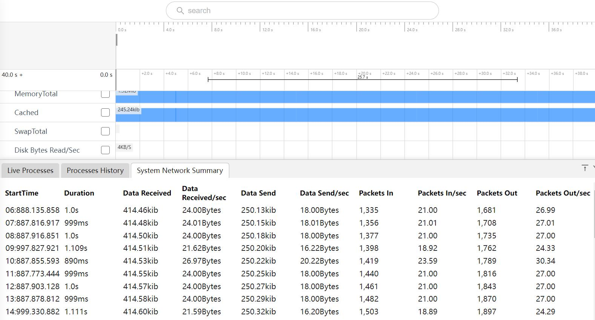
Start Time:采集时间的时间戳;
Duration:前一次采集到本次采集的时间差;
Data Received:接收的网络数据总字节数;
Data Received/sec:每秒接收的网络数据字节数;
Data Send:发送的网络数据总字节数;
Data Send/sec:每秒发送的网络数据字节数;
Packets In:接收的网络总数据包数;
Packets In/sec:每秒接收的网络数据包数;
Packets Out:发送的网络总数据包数;
Packets Out/sec:每秒发送的网络数据包数;